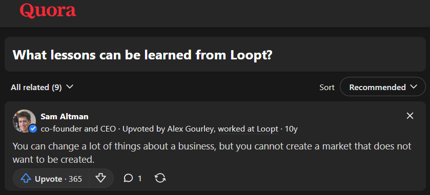
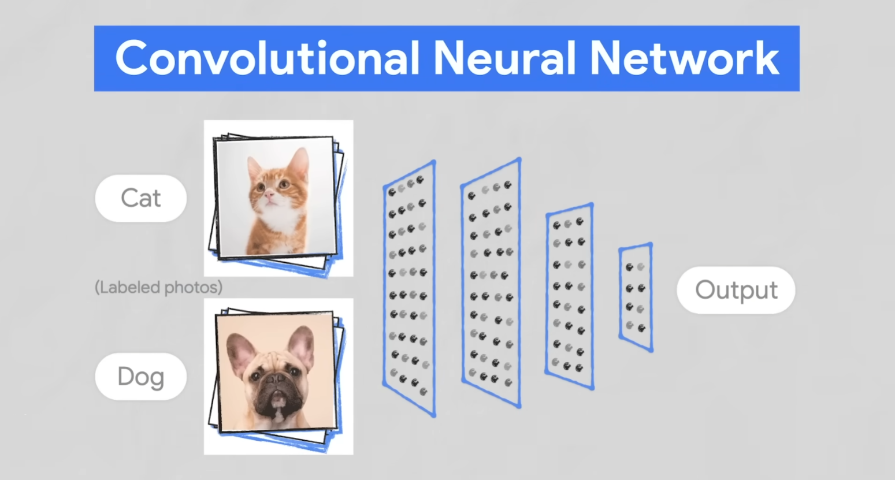
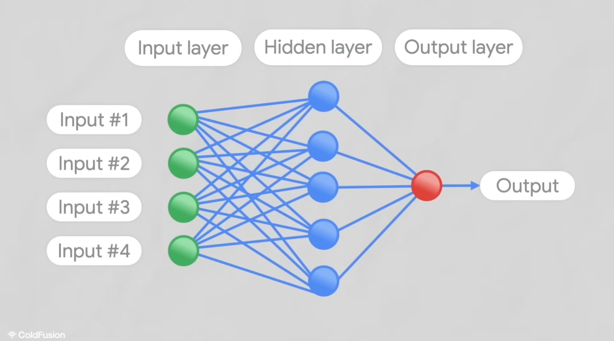
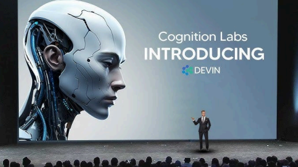
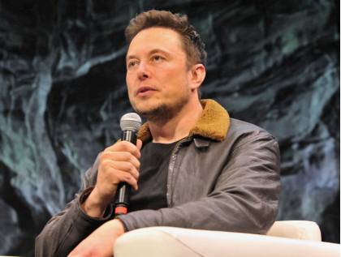

ChatGPT was introduced by OpenAI in November 2022. ChatGPT is a generative AI model. It was introduced firstly by CEO of OpenAI Sam Altman. OpenAI was a Non-Profit Organization before 2015 , but further on after 2019. It became a for-profit organization.
AI was firstly introduced in 1956 by Dartmouth workshops, rather after that AI got on boom in 1980-1987. It were the year’s when AI really got support by getting it to participate in the use of companies and even few governments funded on AI’s development, likely the Japanese government aggressively funded AI with its fifth generation computer project.
Even more the society got its eye on it before introduction of Chat GPT, when the news of Elon Musk’s AI destroyed a champion Gamer in games in 2017. Then During 2019 earlier times The ESA Dextrous robot Arm (DexArm) project got attention of all by showing its outstanding feature that he learns Human Behaviour, which was even technology of OpenAI.Then in 2020 Dall-E got in the society , Dall-E is an evolution of a concept that OpenAI first began to talk about in June 2020, originally called Image GPT.
Sam Altman, A boy born in Chicago on 22nd April,1985. As a Child he was very curious about technologies . At just age of 8, He got his first Computer Macintosh SE and got his gateway to the modern world. He started with AOL chat rooms, spending time and learning a Lot from it. He Completed his studies from Stanford University pursuing Computer Science. Soon with his two friends, He started developing a mobile app called Loopt . Like Facebook but sharing the user's live location to the user's friend. As like every chain he even dropped out of his college in 2005 for dedicating time on developing ‘loopt’ . For more development, he needed investment which was funded by ‘Y-Combinator’ and ‘Sequoia’. Loopt App is like a digital map that helps you navigate through the chaos of every possible city. You can find the fastest routes, discover hidden gems, and avoid traffic jams. Loopt has been a game-changer for everyone from moreover 2004! It’s amazing how it provides real-time updates and suggestions for places to eat, shop, and explore. It's like having a local guide in my pocket! Plus, the interface is so user-friendly, even aged people can use it.
Even on Sam Altman’s Experience speaks on it :
ChatGPT is like a super-smart talking computer program by OpenAI. It can have conversions with the user, just like a normal conversation between two friends. You type something, and it responds with text that sounds just like something a human would say. It's really good at understanding what you mean and keeping the conversation going smoothly. People use it for all sorts of things, like making virtual friends, getting answers to questions, or even helping with writing and learning. ChatGPT is a Generative AI based model. ChatGPT is an AI-ML based model made with python language. It’s a Narrow AI based Model , it’s a type of AI Algorithm which actually does a singular task at a time . It’s more used in developing Games and even in developing Self-Driven Cars. Narrow AI is far more better and beneficial than General AI. ChatGPT is made on several machine learning Algorithms , not accurately specified even on the internet. But, I think it is even made more on Reinforcement training. Reinforcement training is a Machine Learning Based Algorithm Learning type in which , If the machine model works on Right Path then it's rewarded and if It works wrongly then that machine is even penalized.
Few more Algorithm based learning used in building ChatGPT were:
How a transformer model works:
ChatGPT is a generative AI based model, Generative AI means the models which generates the content mostly like audio extracting, Image generating. Even Video synthesizing can be performed with AI. Most booming models currently like ChatGPT, Microsoft bing chatbot (even ChatGPT collaboration ), Bard AI are generative AI based models performing Language generation, more dependently if we say then they are deep kind of Machine Learning model which works on NATURAL LANGUAGE PROCESSING (NLP).
Generative AI is a kind of combination of several seven types of AI models. Those are typically 1. Discriminative AI : Which is majorly used in classifying objects with help of any type of dataset kind of images / audio / language. It divides the objects in categories. 2. Reactive machine : It's Kind of Machine Learning Algorithm which is used in Self-Driven Cars. 3. Theory of mind : Used in chatbots, majorly used in kind of making general conversation. 4. Narrow AI : It's a kind of AI based Algorithm which has a kind of rules that it performs singular tasks at a time, even it is used in e-commerce business models. Even Chat GPT is a kind of Narrow AI based model which performs one task at a time. 5. Supervised Learning : It is type Machine Learning Algorithm, in which the user/creator adds data (puts dataset) and does featuring / indexing the features in the object and then the model gets the desired output from the dataset and even it does classifies the desired output (can be in any form image / video / audio),desired output is also called ground truth or true labels in machine learning language. 6. Unsupervised Learning : It is type of machine learning algorithms, in which the user or creator adds data (creates datasets) and model does it's work as : As like we upload data (that can even be some equations, etc. ) what model does is he checks the data (equations, etc.) and gets the features out ON HIS OWN and as after if we asked him for desired output, he gets it's answer. Unsupervised learning's best use is done in banks, to get anomalies out (i.e. To get the fraudulent scams) out 7. Reinforcement training : It is a type of machine learning Algorithm, in which the model does his work in getting the desired output, but if the model goes on the wrong path then the model gets penalized and if he works on the right path then even the model is rewarded.
1. Decentralized experience : Web 3.0 emphasizes decentralization and in usage of blockchain technology in their platforms. It is more focused as web 2.0 platforms were held under some servers, but in web 3.0 it's not like that it gives users more control over their data. Ultimately reducing the dominance under big tech companies, Which actually even does better user privacy. 2. Internet Of Things (IoT) : web 3.0 is designed mostly broker Singh on the word focusing on to work well with mobile devices and the internet of things it focuses on providing seamless experience across different devices and integrating various data sources web 2.0 while mobile friendly did not fully considered the potential of IoT and need of interoperability. 3. Data storing Web-experience : in case of web 3.0 it actually stores the data in the way that the model does process the data and gets the best desired answer / output to the user. Which is not actually done by web 2.0. On the other hand web 2.0 is centralized with platforms like facebook, youtube, X ( formerly ' Twitter '). Even that type of data processing interface is called a ‘Semantic Web’. 4. AR, VR and intelligent automation experience : web 3.0 emphasizes on using VR and AR technologies to create an immersive online experience for users and with which users can interact with virtual environments, access information in Augmented reality and engage in collaborative virtual spaces on the web.
Web 2.0 Web 3.0 Google - > Presearch Whatsapp - > Status Spotify - > Audius YouTube - > Odysee GitHub - > Hugging Face LinkedIn - > BrainTrust
1. Variational Autoencoders (VAE) is a type of model used in finding anomalies, specifically if I say then it is used in anomaly detection. Morely used in finding financial frauds in banks. Not only that then it is even used in finding manufacturing flaws in any type of physically made parts of any automobile. It's even used in finding network intrusions e.g. Hacks, data breaches, leaks, etc. This model is even used by top mnc's like google for finding security flaws. 2. Github Copilot, it is a type of AI-ML based model which actually helps in writing codes in Github repositories and even that model is a collaboration of OpenAI's Codex model. 3. .Microsoft Bing Chat, it is a AI-ML model which is directly a part of ChatGPT. Even though it is more helpful than chatGPT, that's because there we can set direct limits for answers as answers should be creative / balanced / precise and which actually decreases efforts in making perfect prompts. 4. Text-To- Image Models : There are even some models which help in this cause as like DALL-E , Midjourney, Stable Diffusion, these are even such models which help in decreasing human effort and subsidiarily being a part of Generative AI Based Model. 5. Generative Adversarial Networks (GANs) : These models do even are a next level of AI, These models actually have two arms generator and a discriminator, where one arm generates content related to context (real image or a prompt) & discriminator does his work by finding difference between generated content (img, etc) and original one, making it a multistep process, it focuses on excellence. At last Focusing On ChatGPT like Natural Language Processing Models do not actually understand the text that they (model) writes, They synthetically mimic human language
1. Will be used In enhancing Computer Graphics & Animation more specifically usage in fields of Gaming and Film.. Making moreover realistic transitions and 3D modeling. 2. Will be Used in predicting demand of renewable sources, in managing renewable sources and making efficient distribution networks. 3. will be used in simulating the designs of large scale projects, and can even directly help in providing a blueprint. 4. Will be used in making / providing new materials in the textile industry . 5. Will even be used in Audio to Asset generation.
Elon Musk, CEO of Tesla & the private space company SpaceX. In One of his interviews, he Said “Using AI is like Summoning the demon, AI is far more dangerous than Nukes”, which gives or makes a contrasting image in the minds of listeners of how badly we can get harmed because of AI.
But rather than making any false image in our mind, we should get that with great powers comes great responsibilities. At last we should not fear that saying AI would replace human jobs. Rather than that you think, how a person or ourselves can utilize our day-to-day activities through it.
. -. -..